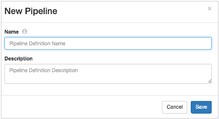

After you start the Data
Collector, you
can log in to the Data
Collector
console and create your first pipeline.
You can customize the address and login that you use to access the Data
Collector. This procedure uses the default settings.
-
To access the Data Collector console, enter the
following text in the address bar of your browser:
localhost:18630
If you customized the
Data
Collector, use the following format:
<host name>:<port no>
-
In the Login dialog box, use the following credentials to
log in: admin / admin.
If you created a custom login, feel free to use it.
-
On the Get Started page, click Create
Pipeline.
The
New Pipeline window appears.

-
In the New Pipeline window, enter a name for the pipeline,
optionally enter a description, and click Save.
The Data Collector console appears. The Properties panel
displays pipeline properties.
For the steps to configure a pipeline, continue with step
5 in "Configuring a Pipeline".